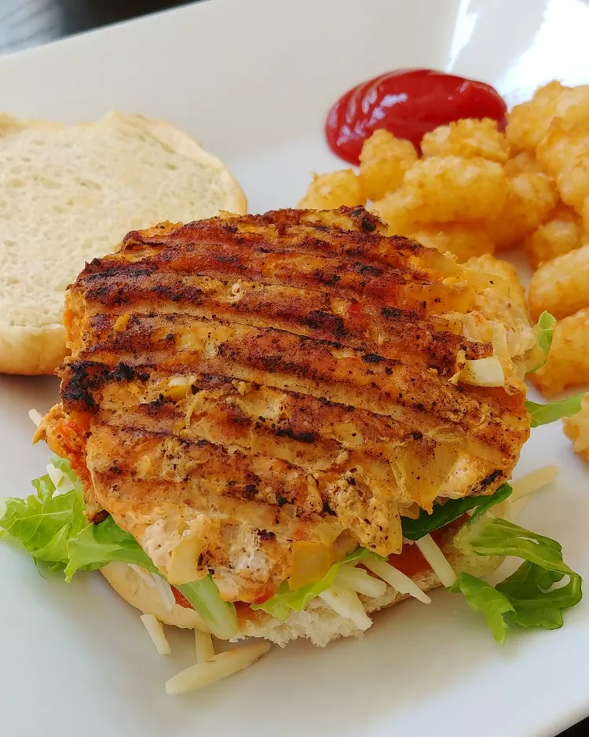

Ground Chicken Taco Burgers

Photo: thedailygourmet | size: 5kg
I came up with these Mexican chicken burgers because my husband and I are trying to add more variety to our diets, and cut back on red meat — and they are delish! I used my George Foreman grill to cook them.
spicy baked sweet potato fries found on Allrecipes. They make a nice substitution for a regular cheeseburger and fries
Ingredients
- 1 pound ground chicken
- ½ small onion, diced
- 1 teaspoon minced garlic
- ½ (1 ounce) package dry taco seasoning mix
- 1 egg
- salt and pepper, to taste
- 4 wheat hamburger buns, toasted
Steps
- Preheat the outdoor grill to medium-high heat. Lightly oil the grill grate, and position it about 4 inches from the heat source.
- Mix ground chicken, onion, garlic, taco seasoning, and egg together in a bowl until thoroughly blended. Season with salt and pepper to taste. Divide chicken mixture evenly and form into 4 soft patties.
- Cook chicken patties on the preheated grill until meat is no longer pink and juices run clear, 5 to 8 minutes per side, depending on thickness. To serve, place each patty on one half of a hamburger bun, top with a slice of cheese, avocado slices, and desired amounts of jalapeño peppers and salsa. Cover with remaining half of bun.